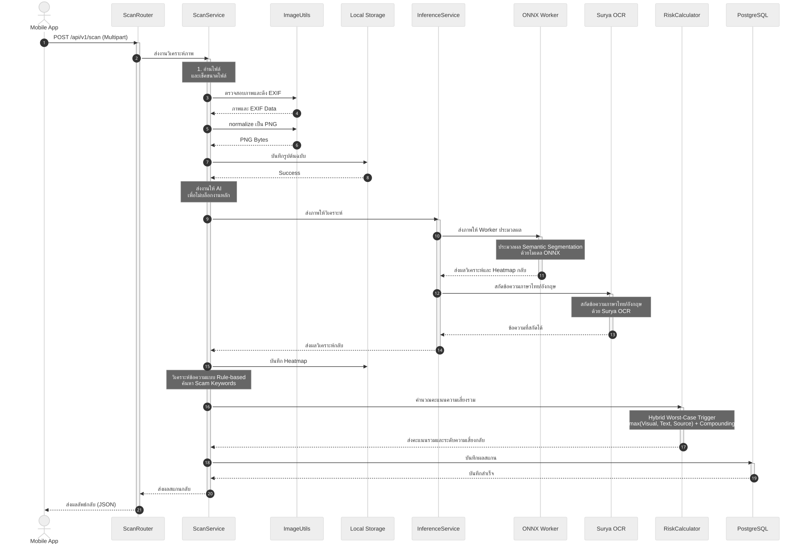

C4 Code Diagram - Image Scanning Flow
แผนภาพ C4 ระดับ Code นี้แสดงลำดับขั้นตอนการทำงานเชิงลึกของกระบวนการวิเคราะห์รูปภาพ Image Scanning ภายใน Backend ของระบบ Scam Image Detection ซึ่งครอบคลุมตั้งแต่การรับ Request จากผู้ใช้ ไปจนถึงการจัดเก็บผลลัพธ์ลงฐานข้อมูล
C4: Code Diagram (Image Scanning Flow)
แผนภาพ C4 (ระดับ Code) นี้แสดงลำดับขั้นตอนการทำงานเชิงลึกของกระบวนการวิเคราะห์รูปภาพ (Image Scanning) ภายใน Backend ของระบบ Scam Image Detection ซึ่งครอบคลุมตั้งแต่การรับ Request จากผู้ใช้ ไปจนถึงการจัดเก็บผลลัพธ์ลงฐานข้อมูล

ดู Mermaid source
sequenceDiagram
autonumber
actor Client as Mobile App
participant Router as ScanRouter
participant Service as ScanService
participant Utils as ImageUtils
participant FS as Local Storage
participant Inference as InferenceService
participant ONNX as ONNX Worker
participant OCR as Surya OCR
participant RiskCalc as RiskCalculator
participant DB as PostgreSQL
Client->>Router: POST /api/v1/scan (Multipart)
activate Router
Router->>Service: ส่งงานวิเคราะห์ภาพ
activate Service
Note over Service: 1. อ่านไฟล์<br>และเช็คขนาดไฟล์
Service->>Utils: ตรวจสอบภาพและดึง EXIF
Utils-->>Service: ภาพและ EXIF Data
Service->>Utils: normalize เป็น PNG
Utils-->>Service: PNG Bytes
Service->>FS: บันทึกรูปต้นฉบับ
FS-->>Service: Success
Note over Service: ส่งงานให้ AI<br>เพื่อไม่บล็อกงานหลัก
Service->>Inference: ส่งภาพให้วิเคราะห์
activate Inference
%% SegFormer Processing
Inference->>ONNX: ส่งภาพให้ Worker ประมวลผล
activate ONNX
Note over ONNX: ประมวลผล Semantic Segmentation<br>ด้วยโมเดล ONNX
ONNX-->>Inference: ส่งผลวิเคราะห์และ Heatmap กลับ
deactivate ONNX
%% OCR Processing
Inference->>OCR: สกัดข้อความภาษาไทย/อังกฤษ
activate OCR
Note over OCR: สกัดข้อความภาษาไทย/อังกฤษ<br>ด้วย Surya OCR
OCR-->>Inference: ข้อความที่สกัดได้
deactivate OCR
Inference-->>Service: ส่งผลวิเคราะห์กลับ
deactivate Inference
Service->>FS: บันทึก Heatmap
Note over Service: วิเคราะห์ข้อความแบบ Rule-based<br>ค้นหา Scam Keywords
%% Risk Calculation
Service->>RiskCalc: คำนวณคะแนนความเสี่ยงรวม
activate RiskCalc
Note over RiskCalc: Hybrid Worst-Case Trigger<br>max(Visual, Text, Source) + Compounding
RiskCalc-->>Service: ส่งคะแนนรวมและระดับความเสี่ยงกลับ
deactivate RiskCalc
%% DB Persistence
Service->>DB: บันทึกผลสแกน
activate DB
DB-->>Service: บันทึกสำเร็จ
deactivate DB
Service-->>Router: ส่งผลสแกนกลับ
deactivate Service
Router-->>Client: ส่งผลลัพธ์กลับ (JSON)
deactivate Router
คำอธิบายองค์ประกอบที่เกี่ยวข้อง
แผนภาพนี้เจาะลึกการทำงานหลักของ ScanService ซึ่งแสดงให้เห็นถึงการทำงานแบบ Non-blocking (Asynchronous) และวิธีการที่ Backend สื่อสารกับ AI
1. API Layer (ScanRouter)
- หน้าที่: ตรวจสอบสิทธิ์ผู้ใช้งาน และรับไฟล์รูปแบบ Multipart Form Data จากนั้นส่งต่อให้ Service ประมวลผล
2. Business Logic Layer (ScanService)
- หน้าที่:
- ตรวจสอบความปลอดภัยของไฟล์ (ขนาดไฟล์ และการแปลงเป็นภาพ Lossless PNG)
- สร้าง Hash จากไฟล์ต้นฉบับเพื่อใช้ตั้งชื่อไฟล์
- เรียกงานประมวลผลหนัก เช่น AI และ Image Processing แบบไม่บล็อกงานหลักของ FastAPI
- วิเคราะห์คำหลอกลวงเบื้องต้นจากผลลัพธ์ OCR
- บันทึกผลสู่ฐานข้อมูล
3. AI Integration Layer (InferenceService)
- หน้าที่: ทำงานประสาน AI โมเดลทั้ง 2 ตัว
- ONNX Worker (SegFormer): ออกแบบให้รันใน subprocess แยกต่างหาก เพื่อแยกการจัดการทรัพยากรและหน่วยความจำของฝั่ง AI ออกจาก Web Server หลัก
- Surya OCR: โมเดลจะถูกเตรียมพร้อมไว้ในหน่วยความจำหลักตั้งแต่ระบบเริ่มทำงาน เพื่อให้สามารถประมวลผลข้อความจากรูปภาพได้ทันทีโดยไม่ต้องเสียเวลาโหลดโมเดลใหม่ ช่วยลดความหน่วงในการตอบสนอง
4. Utility and Calculation
- คลาส/โมดูล: RiskCalculator
- หน้าที่: รับค่าตัวเลขคะแนนดิบเข้าไปคำนวณตามหลัก Worst-Case Trigger ร่วมกับ Multi-factor Compounding และส่งค่าความเสี่ยงรวม ระดับ ปัจจัยหลัก และ Breakdown แยกมิติกลับมา